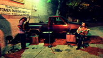
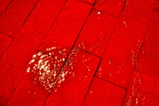
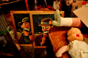
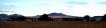
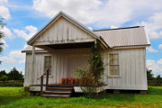

<!DOCTYPE html><html><head><title>JK Kim | @CodingTwinky</title><meta charset="utf-8"><link rel="stylesheet" href="/site/styles.css"><script type="text/javascript" src="/site/script.js"></script><link rel="shortcut icon" href="/site/img/t.ico"></head><body><div id="menuContainer"></div><div id="content"></div></body><script type="text/mustache" id="menuTemplate"><div role="navigation" class="navbar navbar-inverse navbar-fixed-top"><hr id="menuBarStrike"/><div class="container"><div class="navbar-header"><button data-toggle="collapse" data-target=".navbar-collapse" class="navbar-toggle"><span class="sr-only">Toggle navigation</span><span class="icon-bar"></span><span class="icon-bar"></span><span class="icon-bar"></span></button><a id="homeMenuButton" href="http://www.codingtwinky.com" class="navbar-brand">CodingTwinky</a></div><div class="collapse navbar-collapse"><ul class="nav navbar-nav"><li><a id="galleryMenuButton" href="#gallery">Gallery</a></li><li><a id="disclaimerMenuButton" href="#disclaimer">Disclaimer</a></li><li><a id="resumeMenuButton" href="#resume">Resume</a></li></ul><ul class="nav navbar-nav navbar-right"><div class="icons"><a href="mailto:twinky@codingtwinky.com" data-content="Email!" rel="popover" data-placement="bottom" data-trigger="hover" class="addPopover email"></a><a href="http://twitter.com/CodingTwinky" data-content="Twitter!" rel="popover" data-placement="bottom" data-trigger="hover" class="addPopover twitter"></a><a href="http://www.linkedin.com/pub/jk-jung-kim/37/776/b40" data-content="LinkedIn!" rel="popover" data-placement="bottom" data-trigger="hover" class="addPopover linkedin"></a><a href="http://github.com/codingtwinky" data-content="Github!" rel="popover" data-placement="bottom" data-trigger="hover" class="addPopover github"></a></div></ul></div><!--/.nav-collapse --></div></div></script><script type="text/mustache" id="galleryTemplate"><div id="blueimp-gallery" class="blueimp-gallery blueimp-gallery-controls"><div class="slides"></div><h3 class="title"></h3><a class="prev">‹</a><a class="next">›</a><a class="close">x</a><a class="play-pause"></a><ol class="indicator"></ol><div class="modal fade"><div class="modal-dialog"><div class="modal-content"><div class="modal-header"><button type="button" aria-hidden="true" class="close">&times;</button><h4 class="modal-title"></h4></div><div class="modal-body next"></div><div class="modal-footer"><button type="button" class="btn btn-default pull-left prev"><i class="glyphicon glyphicon-chevron-left"></i><Previous></Previous></button><button type="button" class="btn btn-primary next"><Next></Next><i class="glyphicon glyphicon-chevron-right"></i></button></div></div></div></div></div><div id="links"><h1>City</h1><a href="img/photo/parking_lot_a.jpg" title="Parking Lot" data-gallery="data-gallery"></a><a href="img/photo/lone_guitar_a.jpg" title="Lone Guitar" data-gallery="data-gallery"></a><a href="img/photo/love_a.jpg" title="Love" data-gallery="data-gallery"></a><a href="img/photo/brick_a.jpg" title="Bricks" data-gallery="data-gallery"></a><a href="img/photo/apple_a.jpg" title="Apple" data-gallery="data-gallery"></a><a href="img/photo/graffiti_a.jpg" title="Graffiti" data-gallery="data-gallery"></a><a href="img/photo/light_rope_a.jpg" title="Lighted Rope" data-gallery="data-gallery"></a><a href="img/photo/voodoo_a.jpg" title="Voodoo" data-gallery="data-gallery"></a><a href="img/photo/ripple_a.jpg" title="Ripple" data-gallery="data-gallery"></a><a href="img/photo/flowing_water_a.jpg" title="Flowing Water" data-gallery="data-gallery"></a><a href="img/photo/lighted_bridge_a.jpg" title="Lighted Bridge" data-gallery="data-gallery"></a><a href="img/photo/shushi_lady_a.jpg" title="Shushi" data-gallery="data-gallery"></a><a href="img/photo/ny_city_a.jpg" title="NY" data-gallery="data-gallery"></a><a href="img/photo/metal_bird_a.jpg" title="Metal Bird" data-gallery="data-gallery"></a><br/><h1>Thrift Stores</h1><a href="img/photo/camera_light_a.jpg" title="Camera Lamp" data-gallery="data-gallery"></a><a href="img/photo/cameras_a.jpg" title="Cameras" data-gallery="data-gallery"></a><a href="img/photo/sad_clowns_a.jpg" title="Sad Clowns" data-gallery="data-gallery"></a><a href="img/photo/lighted_pictures_a.jpg" title="Lighted Old Pictures" data-gallery="data-gallery"></a><br/><h1>Nature</h1><a href="img/photo/flowers_a.jpg" title="Flowers" data-gallery="data-gallery"></a><a href="img/photo/snow_storm_a.jpg" title="Snow Storm" data-gallery="data-gallery"></a><a href="img/photo/colorado_hike_a.jpg" title="Hike in Colorado" data-gallery="data-gallery"></a><a href="img/photo/storm_a.jpg" title="Storm" data-gallery="data-gallery"></a><a href="img/photo/sunrise_a.jpg" title="Sunrise" data-gallery="data-gallery"></a><a href="img/photo/barren_sunset_a.jpg" title="Barren Sunset" data-gallery="data-gallery"></a><a href="img/photo/rapuki_a.jpg" title="Rapuki's Cliff" data-gallery="data-gallery"></a><a href="img/photo/infinite_a.jpg" title="Infinity" data-gallery="data-gallery"></a><a href="img/photo/big_bend_a.jpg" title="Big Bend" data-gallery="data-gallery"></a><a href="img/photo/storm (2)_a.jpg" title="Dark Cloud" data-gallery="data-gallery"></a><a href="img/photo/dusk_a.jpg" title="Dusk" data-gallery="data-gallery"></a><a href="img/photo/mountains_a.jpg" title="Mountains" data-gallery="data-gallery"></a><a href="img/photo/wall_of_friends_a.jpg" title="Wall of Friends" data-gallery="data-gallery"></a><a href="img/photo/school_a.jpg" title="A School" data-gallery="data-gallery"></a><br/><h1>Baylor</h1><a href="img/photo/early_morning_a.jpg" title="Early Morning" data-gallery="data-gallery"></a><a href="img/photo/rose_in_cemetry_a.jpg" title="Roses at Cemetry" data-gallery="data-gallery"></a><a href="img/photo/contrast_a.jpg" title="Contrast" data-gallery="data-gallery"></a><a href="img/photo/bsb_a.jpg" title="Baylor Science Building" data-gallery="data-gallery"></a><a href="img/photo/homecomming_a.jpg" title="Homcomming" data-gallery="data-gallery"></a><a href="img/photo/morning_bsb_a.jpg" title="Morning at BSB" data-gallery="data-gallery"></a><a href="img/photo/pat_neff_a.jpg" title="Pat Neff" data-gallery="data-gallery"></a><a href="img/photo/cemetry_a.jpg" title="Cemetry" data-gallery="data-gallery"></a><a href="img/photo/road_a.jpg" title="Road" data-gallery="data-gallery"></a><a href="img/photo/floating_lights_a.jpg" title="Floating Lights" data-gallery="data-gallery"></a><a href="img/photo/snowy_road_a.jpg" title="Snowy Road" data-gallery="data-gallery"></a><br/><h1>Museum</h1><a href="img/photo/the_room_a.jpg" title="Camera Lamp" data-gallery="data-gallery"></a><a href="img/photo/death_clock_a.jpg" title="Death Clock" data-gallery="data-gallery"></a><a href="img/photo/ruined_chateau_a.jpg" title="Ruined Chateau" data-gallery="data-gallery"></a><a href="img/photo/be_headed_a.jpg" title="Be Headed" data-gallery="data-gallery"></a><a href="img/photo/strange_picture_a.jpg" title="Missing Picture" data-gallery="data-gallery"></a></div></script><script type="text/mustache" id="disclaimerTemplate"><div class="container"><h1>Disclaimer</h1><br/><h2>Can I have the pictures?</h2><p class="indent">All pictures posted in gallery are licensed under a <a href="http://creativecommons.org/licenses/by-nc-sa/3.0/deed.en_US">Creative Commons Attribution-NonCmmercial-ShareAlike 3.0 Unsupported License</a>, this excludes icons and fonts.</p><p class="indent">Should you ever want a full resolution pictures or just want to say you are using it, please feel free to shoot me an email.</p><h2>Can I ask about stocks?</h2><p class="indent">Please don't ask me any questions about stocks as I'm not allowed talk about them.  And truth is, I know nothing about it.  All I see is numbers flying across.  :)</p><h2>Do you know the movie Inception end in reality or dream?</h2><p class="indent">I do not know this either.  However if your name is Christopher Nolen I would like to discuss how I think it ended.  </p></div></script><script type="text/mustache" id="resumeTemplate"><div class="container"><div class="row"><div class="col-sm-12 content spy-me"><div class="page-header"><h1 id="education">Education</h1></div><p>Baylor University<br/>Bachelor of Science in Computer Science<br/>Graduation: May, 2011<br/></p><div class="page-header"><h1 id="work">Work Experiences</h1></div><h3 id="yahoo">Yahoo<span class="date_range">[June 2014 - present]</span></h3><p>Maintain and test Yahoo's backend distributed cloud messaging service working with ActiveMQ, Bookkeepr, ZooKeeper and more.</p><h3 id="goldman">Goldman Sachs<span class="date_range">[September 2013 - June 2014]</span></h3><p>Worked as an Analyst Developer for Regulatory Technology team to help Goldman Sach’s trading activities align with US, Europe, Middle East and Asia regulations by providing them software solutions.<div class="projects"><h4>GLEW</h4><div>Global Legal Entity Workstation, an application that processes trades and allow users to monitor Financial Institutional holding portion of Basel regulations.<span class="tech">(Java, Ant, internal libraries)</span></div></div></p><h3 id="sungard">SunGard<span class="date_range">[June 2011 - September 2013]</span></h3><p>Worked as a senior software consultant to solve technology challenges in the financial and energy industries.<div class="projects"><h4>ETAP</h4><div>A project to help an energy company with Dodd-Frank compliance by sending, receiving, and confirming energy stock trades from ICE, CME, DTCC SDRs and custom stock entries to send them into a stock trade application called ZaiNet now known as Aligne.  This is a tier 1 application with a full disaster recovery readiness.<span class="tech">(Java, JSP, Strut, Spring, Hibernate, PL/SQL, jQuery, Javascript, HTML, Weblogic, XSLT, Quick Fix, CSS, Confirm Hub, Ant)</span></div><h4>Relay</h4><div>A project that is designed to work with ERCOT to manage and maximize power plant resource potential based on demands, usage projections, resource price and other factors.  This is a tier 1 application with a full disaster recovery readiness.<span class="tech">(Java, JSP, Strut, Spring, PL/SQL, jQuery, Javascript, HTML, Weblogic, XSLT, CSS, Ant)</span></div><h4>Helios</h4><div>Extended a web application project to enhance accounting department of SunGard by adding a procurement handling logic and interface.<span class="tech">(C#, .Net, ASP, SQL Server, jQuery, Javascript, HTML)</span></div><h4>Huntr</h4><div>An web application that is designed to play “scavenger hunt” game with mobile devices via geo check ins.<span class="tech">(node.js, jQuery, socket.io, MongoDB, and GoogleMap API)</span></div><h4>Short Term Liquidity</h4><div>Excel VBA code project to predict stock trade credit flow based on collaterals, thresholds, settlement dates and other factors.<span class="tech">(Excel VBA)</span></div></div></p><h3 id="baylor">Baylor University<span class="date_range">[June 2010 - May 2011]</span></h3><p>Worked as a system administrator intern, developing and managing programs and projects for Baylor.<div class="projects"><h4>Labstat</h4><div>A program that tracks each computer's activity and users by having the ability to do system administrative work such as force log off users, limiting user's log in count, messaging and others.<span class="tech">(C#, .Net, SQL Server, PHP)</span></div><h4>Screen Saver</h4><div>A screen saver program that is designed to force log off logged on users upon inactivity along with advertisement capability.<span class="tech">(C#, .Net, SQL Server)</span></div><h4>Windows 7 upgrade</h4><div>Upgraded 100+ computers to Windows 7 from Windows XP.  Devised solutions to make most of engineering, computer science, and bio informatics software that had minor issues and developed a batch program that automatically applied upgrades.<span class="tech">(Linux shell)</span></div></div></p><div class="baylor2BG"></div><div class="page-header"><h1 id="github">Github</h1></div><div class="projects"><h3 id="ungit">Ungit
-<a href="https://github.com/FredrikNoren/ungit">Repo</a></h3><div>GitHub project that is designed to visualize Git repository and provide friendly interface to users.<span class="tech">(node.js, grunt.js, phantom.js, mocha.js, jQuery, knockout, and socket.io)</span></div><h3 id="serenedi"><a href="http://www.codingtwinky.com/serenedi">Serenedi</a>-<a href="http://www.github.com/codingtwinky/serenedi">Repo</a></h3><div>A personal side web application project to display occurring events around a geological location of client based on date, and type.<span class="tech">(jQuery, jQuery-ui, grunt, mocha.js, can.js, node.js, jade, Google Map API, Facebook API, and Eventbrite API)</span></div></div><div class="page-header"><h1 id="skills">Skills</h1></div><p><ul><li>Java</li><li>Javascript</li><li>Node.js</li><li>SQL</li><li>Full stack development</li></ul></p><div class="page-header"><h1 id="languages">Languages</h1></div><p>[Human Languages]<ul><li>English</li><li>Korean</li></ul></p><div class="page-header"><h1 id="interests">Interests</h1></div><p><ul><li>Network security</li><li>Socket programming</li><li>Node.js</li><li>Web application development</li><li>Full stack devlopment</li><li>Finance industry</li><li>Cycling</li><li>Rugby</li><li>Snowboarding</li><li>Photography</li></ul></p></div></div></div></script></html>